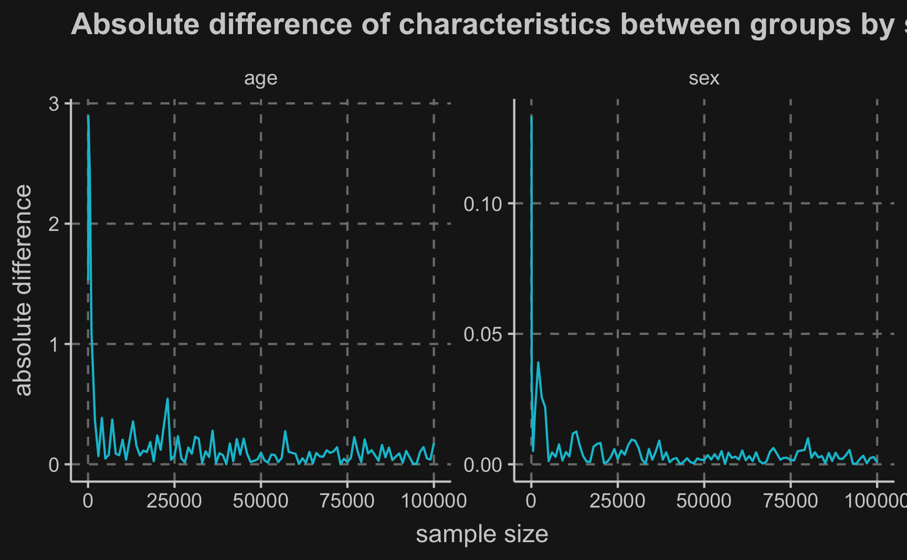
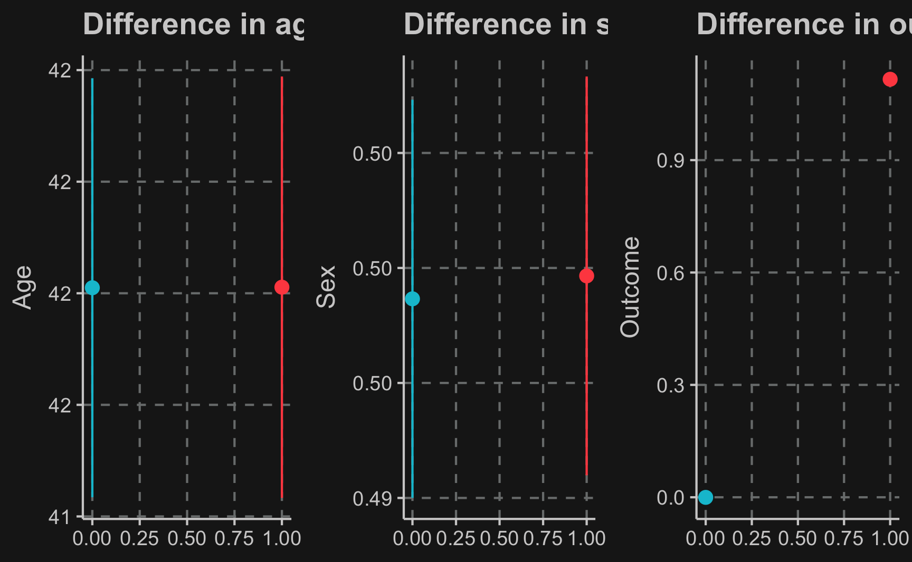
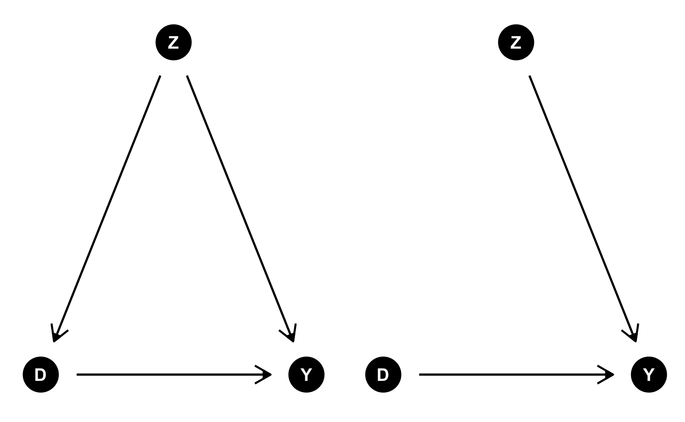

Let’s recall the fundamental problem of causal inference: we are not able to observe individual treatment effects. Only one potential outcome can be observed because there is only one state of the world.
Arguably, the most promising way to deal with it is randomization of the observation units and in particular randomized experiments, also known as randomized controlled trials (RCTs). Due to their statistical rigor and simplicity, RCTs are called the gold standard of causal inference.
RCTs do not solve the fundamental problem of only observing one potential outcome but instead treatment and control group are randomized such that both groups are expected to be very similar. Having similar groups that either received or not received treatment, we can calculate a valid causal estimate, the Average Treatment Effect (ATE). But it is only due to the randomization of observation units (e.g. individuals) that we are able to interpret it causally.
Estimation
Let’s go into detail what needs to be ensured for a valid estimation, how to randomize treatment objects and how perform estimation.
Identification
Two assumptions are crucial for the ATE to be interpreted causally.
(1) Independence assumption
We have to assume independence between the potential outcomes and the treatment assignment, i.e. treatment assignment to a unit hast nothing to do with the size of treatment effect for a unit:
\[
D_i \perp (Y_{i0}, Y_{i1})
\]
This is where we exploit randomization. We can actually ensure that there is no association between potential outcomes and treatment by randomly assigning observation units to control and treatment group.
This way, both groups will be very similar on average, both in observed and in unobserved characteristics. They will only differ in their treatment and possibly in the observed outcome, which makes the estimation of a causal effect possible.
Please make sure, that you understand the formula correctly. It does not mean that there is no treatment effect. The (potential) outcome under \(D=0\) or \(D=1\) is not affected by whether a particular observation unit does or does not receive the treatment. However, the observed outcome \(Y_i\) might depend on \(D_i\), and in fact, that is the effect we are interested in.
A related way to express it is
\[
E[Y_0|D=0] = E[Y_0|D=1]
\]
Regardless of the treatment value a unit receives, the expected (but not always observed) potential outcome is the same in both treatment (\(D=1\)) and control group (\(D=0\)). The mean potential outcome is equal for both groups.
This does also imply equality of ATE and ATT, as there is no bias and the association we see is equal to the causation.
When is the independence assumption violated?
An example, where the independence between treatment and potential outcomes is not given is if the treatment assignment is not randomized but people are able to self-select into on of the groups.
Then, it could happen that for e.g. more motivated people would choose the treatment and when motivation had an impact on the potential outcome, e.g. more motivated people have a higher outcome for both potential outcomes compared to less motivated people, that are more likely to be in the control group. Under these circumstances, the independence assumption would be violated.
(2) SUTVA
The second assumption that needs to be fulfilled is the stable unit treatment value assumption (SUTVA).
It ensures that there is no interference between units. In other words, one unit’s treatment does not affect outcomes of other units. If unit \(i\) received a treatment, than this treatment of unit \(i\) should have no effect on another unit.
Implicitly, the assumption states that there are only two potential outcomes for each unit and they only depend on a unit’s own treatment status.
When is the SUTVA violated?
In situations where observation units are somehow clustered like e.g. in classrooms, departments or other kind of groups, violations of SUTVA can occur.
As an example, imagine you are running a company and select a few of your employees to participate in a program that teaches them about safety measures. After the program, it is very likely that they share some of the program content with their colleagues in their department, who might not have been selected for participation. Then, there are spillover effects.
To deal with violations of SUTVA you could change your selection process or change the level of analysis (analyzing clusters instead of individuals).
Randomization
In practice, randomization is done automatically by software programs but to get an intuition, you could also think of it as e.g. flipping a coin for each observation unit or individual and assigning units that get head to the treatment group, while units that get tail are assigned to the control group (or the other way around).
In fact, that is already a special case because the probability of being treated and being not treated is 50% for both cases. But treatment probabilities could also take different values for a variety of reasons, for example because treatment is costly. However, you need to ensure that both groups are large enough to be comparable in order to fulfill the independence assumption.
Let’s see what that means. We assume that we have a population of 100’000 individuals which we want to learn something. Using runif() and rbinom, we synthetically generate this population with random value for the characteristics \(age\) and \(sex\).
library(tidyverse)# population sizen <-1e+5# create population with two characteristicsX <-tibble(age =runif(n, 18, 65), # draw random values from uniform distributionsex =rbinom(n, 1, 0.5) # draw random values from binomial distribution)# show first valueshead(X)
# A tibble: 6 × 2
age sex
<dbl> <int>
1 31.0 0
2 18.0 1
3 42.0 1
4 18.7 0
5 21.0 1
6 62.9 0
Until now, we have not assigned units to treatment and control group and actually, we do not want to assign our whole population to any group. As a matter of fact, in many applications, you are just able to draw a sample from the population and almost never the whole population.
Remember, randomization of treatment should achieve that we are able to interpret the average treatment effect causally and for that, both groups need to be as similar as possible. The image illustrates the randomization process. Try to think what could happen if you have just very few units in both groups. How likely is is that they are very similar regarding their characteristics? You can probably already sense that this might not be sufficient to make groups comparable.
But let’s try it out and see how average group characteristics develop when we change the sample size.
In R, it is very easy to generate a random vector that we can use for randomization. Here, we wan to have a random vector that contains either 1 (treatment group) or 0 (control group) with a treatment probability of 50%. We can make use of the rbinom function that can randomly generate outcomes of a Bernoulli trial, which you can just imagine as flipping the coin \(n\) times.
As we have 100’000 people in our population, we will vary sample sizes from 100 to 100’000 to understand the impact sample size has.
# vector of sample sizessss <-c(50, 100, 500, seq(1000, 1e+5, 1000))# empty list to store average tables inavg_tbl_age_lst <-list()avg_tbl_sex_lst <-list()tbl_sampled_lst <-list()# for sample size in sample sizesfor (ss in sss) {# sample from population X_sampled <-sample_n(X, ss)# perform random assignment D <-rbinom(ss, 1, 0.5)# combine characteristics and assignment in one table tbl_sampled <- X_sampled %>%mutate(treatment = D)# store in list tbl_sampled_lst[[paste(ss)]] <- tbl_sampled# get average characteristics ...# ... for age avg_tbl_age <- tbl_sampled %>%group_by(treatment) %>%summarise(mean_age =mean(age)) %>% ungroup %>%add_column(sample_size = ss,variable ="age") %>%pivot_wider(names_from = treatment,names_prefix ="D_",values_from = mean_age) %>%mutate(delta_abs =abs(D_1 - D_0),delta_rel = delta_abs/D_0)# store table in list avg_tbl_age_lst[[paste(ss)]] <- avg_tbl_age# ... for sex avg_tbl_sex <- tbl_sampled %>%group_by(treatment) %>%summarise(mean_sex =mean(sex)) %>% ungroup %>%add_column(sample_size = ss,variable ="sex") %>%pivot_wider(names_from = treatment,names_prefix ="D_",values_from = mean_sex) %>%mutate(delta_abs =abs(D_1 - D_0),delta_rel = delta_abs/D_0)# store table in list avg_tbl_sex_lst[[paste(ss)]] <- avg_tbl_sex}
As you can see in the plot, group average characteristics converge with increasing sample size. The more units are assigned to either group, the less differences are between the groups and thus, the independence assumption, stating that groups only differ by their treatment status, is fulfilled. But although you need a minimum amount of units, there is not much improvement after increasing the sample size way beyond that.
# combine tables to one larger tableavg_age <- avg_tbl_age_lst %>%bind_rows()avg_sex <- avg_tbl_sex_lst %>%bind_rows()avgs_tbl <- avg_age %>%bind_rows(avg_sex)# plot convergenceggplot(avgs_tbl, aes(x = sample_size, y = delta_abs)) +geom_line() +facet_wrap(~variable, scales ="free") +labs(x ="sample size", y ="absolute difference") +ggtitle("Absolute difference of characteristics between groups by sample size")

Average Treatment Effect
Let’s just use a sample size of 40’000 units. That means there should be about ~20’000 units per group. There are many suggested rules and guidelines to choose the right sample size, but for now, we will disregard it as our data is simulated and therefore, we do not have any data problems.
So far, we have just looked at the covariate balance but have not included the outcome variable. Let’s do that now. In the background we simulated the outcome after treatment and added the column outcome to our table.
As already mentioned, having balanced baseline characteristics between treatment and control group allows us to estimate the average treatment effect.
But how do we calculate the average treatment effect? We can just take a simple difference in means to estimate it. By the way, groups can be of different group size. It is only important, that they are comparable in their characteristics.
Let’s compute the average outcome per group. We see that there seems to be a difference, the average outcome in the treatment group is higher.
# group by treatment group and compute average outcomedf_out %>%group_by(treatment) %>%summarise(mean_outcome =mean(outcome))
Generally, it is recommendable to use a linear regression to get an estimate of the treatment effect. You don’t have to manually compute the difference and additionally, the output of lm() and summary() yields information regarding its statistical inference. Then, we see that this effect is in fact highly statistically significant. The effect is equal to the difference of the two values just seen above. Check it out!
# compute ATE with linear regressionlm_ate <-lm(outcome ~ treatment, data = df_out)summary(lm_ate)
Call:
lm(formula = outcome ~ treatment, data = df_out)
Residuals:
Min 1Q Median 3Q Max
-1.0245 -0.2046 -0.0005 0.2077 1.0459
Coefficients:
Estimate Std. Error t value Pr(>|t|)
(Intercept) -0.000289 0.002682 -0.11 0.91
treatment 1.116174 0.003796 294.02 <2e-16 ***
---
Signif. codes: 0 '***' 0.001 '**' 0.01 '*' 0.05 '.' 0.1 ' ' 1
Residual standard error: 0.38 on 39998 degrees of freedom
Multiple R-squared: 0.684, Adjusted R-squared: 0.684
F-statistic: 8.65e+04 on 1 and 39998 DF, p-value: <2e-16
One way to support your results could be a boxplot that on the one hand shows the difference of regressors by group and on the other hand the difference of outcomes. Here we will show the 95% confidence intervals for our estimates and it can be seen that there is a substantial difference between both groups. However, for our independent variables, age and sex , both groups are very similar.
# plot independent and and depdent differencecompare_age <-ggplot(df_out, aes(x = treatment, y = age, color =as.factor(treatment))) +stat_summary(geom ="pointrange", fun.data ="mean_se", fun.args =list(mult=1.96),show.legend = F) +labs(x =NULL, y ="Age", title ="Difference in age")compare_sex <-ggplot(df_out, aes(x = treatment, y = sex, color =as.factor(treatment))) +stat_summary(geom ="pointrange", fun.data ="mean_se", fun.args =list(mult=1.96),show.legend = F) +labs(x =NULL, y ="Sex", title ="Difference in sex")compare_outcome <-ggplot(df_out, aes(x = treatment, y = outcome, color =as.factor(treatment))) +stat_summary(geom ="pointrange", fun.data ="mean_se", fun.args =list(mult=1.96),show.legend = F) +labs(x =NULL, y ="Outcome", title ="Difference in outcome")# plot age, sex and outcome differences for both groupsggpubr::ggarrange(compare_age, compare_sex, compare_outcome, ncol =3)

But why did we not include \(age\) and \(sex\) into our regression? Because they are similarly distributed across both groups it should not change the treatment effect. But still, they might have an impact on the outcome, as well. Although being similarly distributed in both groups, it does not mean that they still vary within each group. So let’s see what happens if we include them.
Both regressors turn out to be significant. However, as expected, the treatment effect is almost unchanged.
# include other regressorslm_all <-lm(outcome ~ treatment + age + sex, data = df_out)summary(lm_all)
Call:
lm(formula = outcome ~ treatment + age + sex, data = df_out)
Residuals:
Min 1Q Median 3Q Max
-0.6738 -0.2500 0.0019 0.2510 0.6913
Coefficients:
Estimate Std. Error t value Pr(>|t|)
(Intercept) -0.459642 0.004874 -94.3 <2e-16 ***
treatment 1.115773 0.002774 402.3 <2e-16 ***
age 0.005052 0.000102 49.5 <2e-16 ***
sex 0.499399 0.002774 180.1 <2e-16 ***
---
Signif. codes: 0 '***' 0.001 '**' 0.01 '*' 0.05 '.' 0.1 ' ' 1
Residual standard error: 0.28 on 39996 degrees of freedom
Multiple R-squared: 0.831, Adjusted R-squared: 0.831
F-statistic: 6.56e+04 on 3 and 39996 DF, p-value: <2e-16
Subgroup analysis
The significance of \(age\) and \(sex\) could also indicate that there are different treatment effects across different levels of both covariates. Then, a so called interaction/moderation effect would be covered behind the statistical coefficients.
A moderation effect expresses different strengths of the treatment for different subgroups. For example older women might benefit relatively more and younger males relatively less.
In R, we include interaction effects by using either using a product x1*x2 or a colon x1:x2.
# include interactionlm_mod <-lm(outcome ~ treatment * age + treatment * sex, data = df_out)summary(lm_mod)
Call:
lm(formula = outcome ~ treatment * age + treatment * sex, data = df_out)
Residuals:
Min 1Q Median 3Q Max
-0.4436 -0.0666 -0.0003 0.0665 0.4769
Coefficients:
Estimate Std. Error t value Pr(>|t|)
(Intercept) -1.35e-03 2.37e-03 -0.57 0.57
treatment 2.02e-01 3.34e-03 60.49 <2e-16 ***
age 2.02e-05 5.17e-05 0.39 0.70
sex 4.34e-04 1.40e-03 0.31 0.76
treatment:age 9.97e-03 7.30e-05 136.49 <2e-16 ***
treatment:sex 9.99e-01 1.98e-03 503.43 <2e-16 ***
---
Signif. codes: 0 '***' 0.001 '**' 0.01 '*' 0.05 '.' 0.1 ' ' 1
Residual standard error: 0.099 on 39994 degrees of freedom
Multiple R-squared: 0.978, Adjusted R-squared: 0.978
F-statistic: 3.62e+05 on 5 and 39994 DF, p-value: <2e-16
Note also that \(R^2\) has increased with each addition to the regression.
As the data is simulated, we can check what the data-generating process is and based on that evaluate what regression equation provides the best solution. Check for yourself what model should be used.
Again, it shows how crucial theoretical knowledge of the phenomenon you are studying is. Imagine a situation with a high number of regressors. Testing out all potential variables as moderators requires some effort and might even lead to results just due to chance.
Conclusion
In this chapter, you should have learned the benefits of randomization. So why not just always randomize treatment objects and make causal claims afterwards?
There are some fields like medicine, particularly drug trials, that almost fully rely on randomized controlled trials. Other fields, however, cannot rely on RCTs due to a variety of reasons.
For example in social sciences conducting RCTs can be problematic due to high cost or for ethical reasons.
One example would be researching the effect of smoking during pregnancy on success of the child later in life. It is clearly unethical to dictate some women to smoke during pregnancy as we already know that it will very likely do damage to both mother and children and we are not interested in the direction of the effect but rather in the magnitude.
Another example would be the effect of implementing a minimum wage on some employees. While the result is not obvious in this case, it is still not fair to pay minimum wage only to a selection of the workforce as it substantially affects their life.
Also, many government programs like e.g. unemployment insurance cannot given only to a random sample of people to identify the effect.
!!! Check example
In such cases, researchers need to rely on observational studies to estimate effects. Using our graphical language introduced in the previous chapters, let’s illustrate the difference between observational studies and DAGs.
library(ggdag)
Attaching package: 'ggdag'
The following object is masked from 'package:stats':
filter
# observational studies# define coordinatesobs_coords <-list(x =c(D =0, Z =0.5, Y =1),y =c(D =0, Z =1, Y =0) )# define dependenciesobs_topic_DAG <-dagify( Y ~ D, Y ~ Z, D ~ Z,exposure ="D",outcome ="Y",coords = obs_coords)# arrow descriptionsobs_type <-c(NA, NA, NA, NA)# plot DAGobs_dag <-ggdag(obs_topic_DAG, node_size =10) +geom_dag_edges_link(aes(label = obs_type),angle_calc ="along",label_dodge = grid::unit(2.5, "mm"),arrow = grid::arrow(length = grid::unit(4, 'mm'))) +theme_dag()# experimental studies# define coordinatesexp_coords <-list(x =c(D =0, Z =0.5, Y =1),y =c(D =0, Z =1, Y =0) )# define dependenciesexp_topic_DAG <-dagify( Y ~ D, Y ~ Z,exposure ="D",outcome ="Y",coords = exp_coords)# arrow descriptionsexp_type <-c(NA, NA, NA)# plot DAGexp_dag <-ggdag(exp_topic_DAG, node_size =10) +geom_dag_edges_link(aes(label = exp_type),angle_calc ="along",label_dodge = grid::unit(2.5, "mm"),arrow = grid::arrow(length = grid::unit(4, 'mm'))) +theme_dag()# plot both DAGs side-by-sidegridExtra::grid.arrange(obs_dag, exp_dag, ncol =2)

In observational studies, one large issue (not the only one) is confounding by other variables. Confounding falsifies our estimate in case we do not control for this variable. Because in many times, we don’t know confounders or they are unobserved, estimates from observational studies always rely on additional assumptions and domain knowledge that randomized experiments do not require.
Opposed to that, in RCTs, there is no arrow from the confounder to the treatment assignment. That is because we randomized treatment and therefore, by definition, treatment selection cannot be confounded.
All other tools that we will learn in the following chapters try to deal with the issue of isolating causal effects in observational studies by exploiting the underlying causal mechanisms.
Assignment
Online shops run a lot of randomized experiments (in business context often called AB-testing), where a randomly selected website visitors are shown a slightly different website than the others. This way, new features can be tested and the final decision to implement a new feature will be based on the results of this test.
Let’s imagine the following scenario: you are running an online shop and worry about the cost of your customer service. To reduce the cost, you consider implementing a chat-bot that can replace the human customer service. However, you are not sure if that could affect your sales negatively, and therefore you plan an AB-test, where a selection of users is led on a website with a chatbot and the other customers still turn to the human customer service in case of question.
Compute the ATE and also check if there are subgroup-specific effects and compute an exemplary CATE for one subgroup.